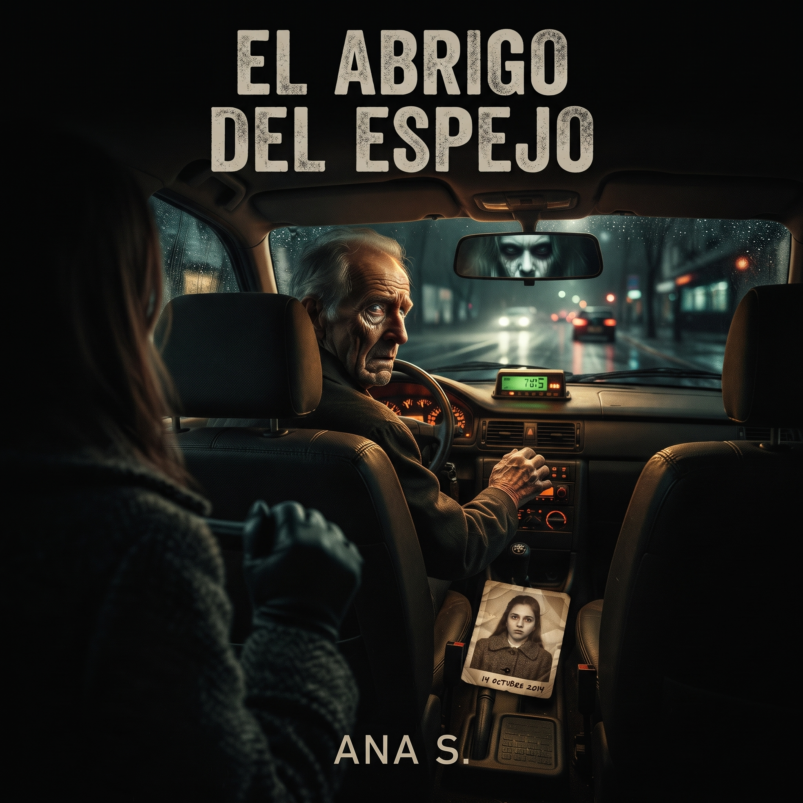

El taxista se negó a llevarme y entonces descubrí por qué...

El taxi frenó frente a mí con la puntualidad de una señal. Eran casi las dos de la mañana y la avenida estaba tan quieta que hasta mis pasos parecían ajenos. Le indiqué la dirección y el conductor no respondió de inmediato.
Miró el espejo retrovisor, luego la calle vacía detrás de mí. Por un instante pensé que no me había escuchado. Pero cuando volvió a mirarme, su expresión había cambiado: no era miedo exactamente, sino el gesto de alguien que reconoce una historia que preferiría no contar.
—A esa dirección no voy —dijo al fin. Antes de que pudiera preguntar por qué, señaló con cuidado el asiento trasero. Allí no había nadie. Sin embargo, el cinturón de seguridad estaba abrochado.
La radio encendió sola una melodía antigua. El taxista dejó caer las llaves en el suelo y, al recogerlas, vi una fotografía doblada junto al freno de mano.
La persona retratada llevaba el mismo abrigo que yo. Bajo la imagen había una fecha escrita a mano, exactamente de diez años atrás.
La atmósfera dentro del auto se volvió densa, casi irrespirable, mientras el brillo tenue del tablero iluminaba las manos temblorosas del conductor. Quise abrir la puerta para huir, pero el pestillo se trabó con un chasquido metálico seco que resonó como una sentencia.
—No eres la primera que sube a esta hora buscando esa misma calle —susurró él sin apartar la vista del retrovisor, donde mis ojos se encontraban con los suyos—. Todos portan el mismo abrigo, todos dicen exactamente el mismo destino y todos olvidan lo que pasó antes de cruzar el umbral.
Miré de nuevo el asiento trasero. El cinturón abrochado comenzó a aflojarse lentamente, como si unos dedos invisibles deslizaran la hebilla con paciencia infinita. La melodía antigua de la radio se convirtió en un susurro estático que mencionaba mi nombre completo con una claridad escalofriante.
—Mira bien la foto —me pidió el taxista con voz quebrada, señalando con la barbilla hacia la palanca de cambios—. Esa persona no llevaba puesta la ropa de abrigo por frío... era la mortaja con la que la encontraron en el baúl de este mismo vehículo una década atrás.
Un relámpago cruzó la avenida vacía a través de los cristales oscurecidos, iluminando fugazmente el asiento delantero. En ese segundo, el reflejo del espejo no devolvió mi rostro, sino una mueca pálida y estática que llevaba diez años esperando este preciso viaje de vuelta a casa. La manija de la puerta cedió de golpe y la calle fría me recibió, pero ya no había ciudad alrededor, solo una hilera infinita de adoquines oscuros bajo la niebla.
Entonces comprendí por qué se negó a arrancar. No era mi dirección lo que temía, sino la coincidencia: la última pasajera que pidió ese mismo trayecto había desaparecido antes de llegar. El taxista guardó silencio, desabrochó el cinturón trasero y me pidió que buscara otro coche.